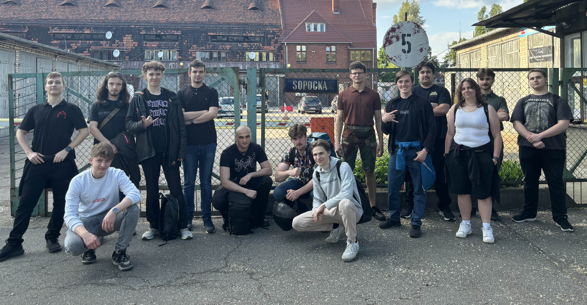

O nas
Koło Naukowe DefenceTech to zespół pasjonatów nowoczesnych technologii i systemów obronnych, którzy łączą wiedzę inżynierską, elektroniczną i programistyczną. Realizujemy innowacyjne projekty z zakresu konstrukcji pojazdów specjalistycznych, modułów napędowych i systemów zarządzania projektami. Naszym celem jest rozwijanie praktycznych umiejętności członków zespołu oraz wnoszenie realnego wkładu w nowoczesne technologie obronne.
Nasze projekty
Bufo

Pierwsza iteracja lekkiego pojazdu wsparcia piechoty. Głowny cel tego projektu to wejście w branże oraz rozwój umiejetności i zdobycie doświadczenia przed przejściem do kolejnych bardziej zaawansowanych projektów. Pojazd ma być przystosowany do działania z różnymi modułami przydatnymi na polu bitwy.
Gilgamesz

Jest druga iteracją "Bufo" która jest wolna od bolączek i chorób wieku dziecięcego ktore występowały w kaktusie. Założenia są tożsame jak w poprzednim czyli patforma jezdna do integracji różnych modułów wsparcia.
Załoga
Liderzy zespołów:
Mateusz Gajewski - Moduły
Bartosz Gburczyk - Struktura nośna
Jakub Domagała - Zawieszenie
Mateusz Piasecki - Napęd
Nikodem Świercz - Elektronika
Adrian Pietras - Marketing
Oczywiście jest nas wiele więcej...
Sponsorzy

WZŁ 2 Czernica - Sponsor Strategiczny

PWR Wydział mechaniczny - Sponsor Strategiczny
Kontakt
Napisz do nas:
defence.tech.marketing@gmail.com